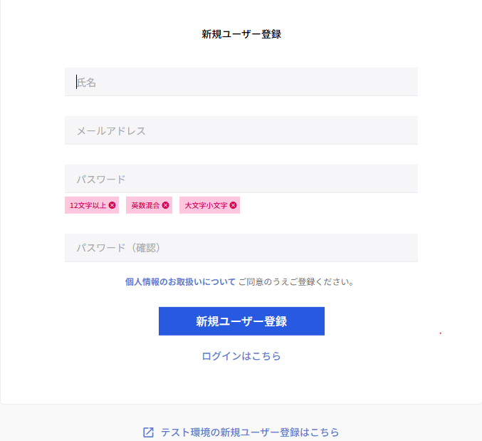
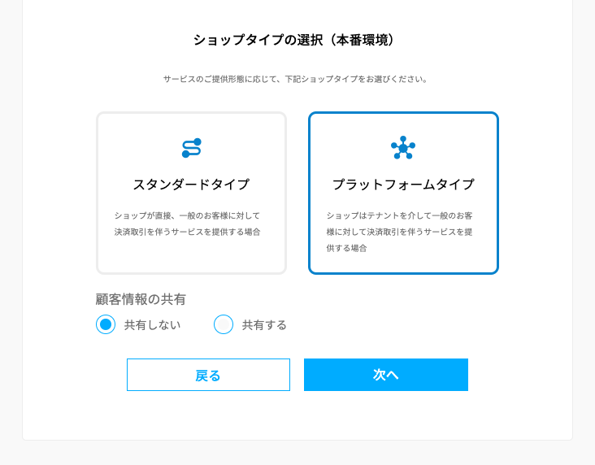

开设平台
使用平台功能前，请以平台类型注册新用户。
测试环境和生产环境均须进行此操作。
打开控制面板的新用户注册页面后，输入姓名、电子邮件地址和密码，点击［注册新用户］。

在商户类型选择页面选择［平台类型］。
根据平台功能的用途选择是否共享客户信息。该设置只能在创建商户时选择，之后无法修改。
点击［下一步］即可完成新用户注册，并创建平台类型商户。



使用平台功能前，请以平台类型注册新用户。
测试环境和生产环境均须进行此操作。
打开控制面板的新用户注册页面后，输入姓名、电子邮件地址和密码，点击［注册新用户］。

在商户类型选择页面选择［平台类型］。
根据平台功能的用途选择是否共享客户信息。该设置只能在创建商户时选择，之后无法修改。
点击［下一步］即可完成新用户注册，并创建平台类型商户。

本页为非官方中文翻译；如有歧义，请以官方日文原文为准。